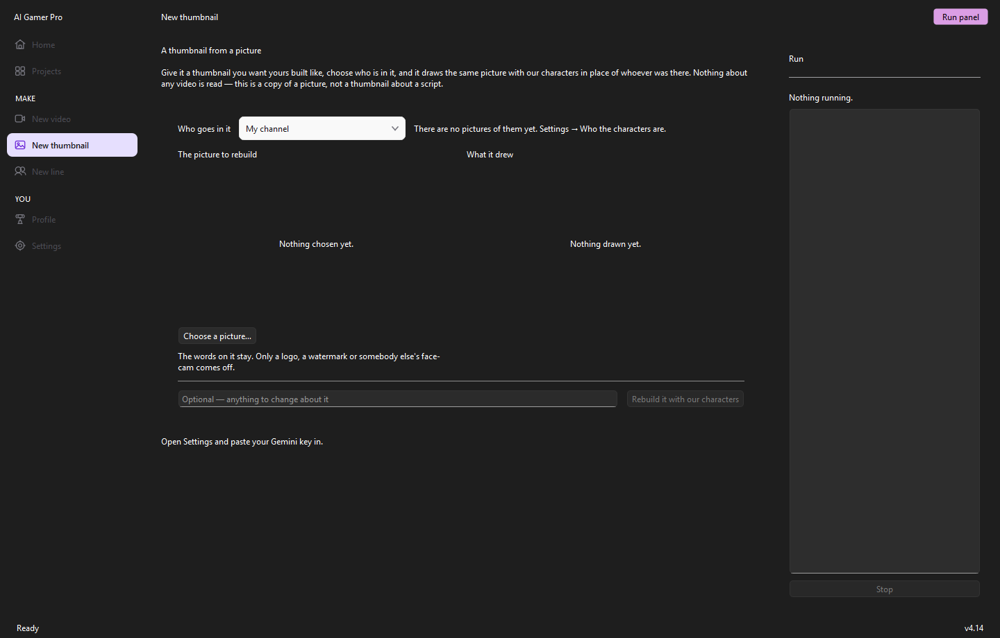
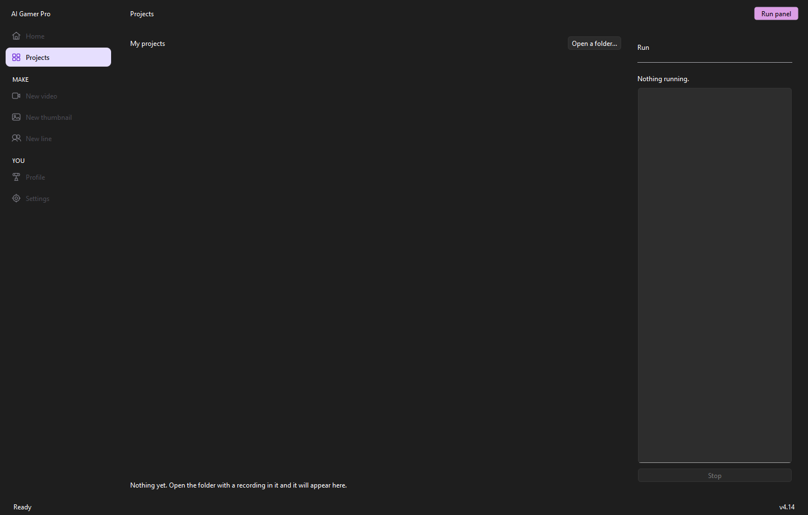

AI Gamer Pro · $39 a month
Drop in the recording. Pick up the upload.
A Windows app for faceless gaming channels. It splits your gameplay, writes the script in your channel's voice with your own characters, records a two-voice AI voiceover, draws the thumbnail, and writes the title, description, chapters and tags — after reading how your own past titles actually did.
- No card for the trial
- Your own Gemini + ElevenLabs keys
- Windows 10 & 11
- Nothing leaves your machine
The pipeline
Five steps, in order, down the left of the window.
Each one hands off to the next. Nothing you have paid for is ever thrown away: stop halfway and the finished file stays as it was, with the fragment written beside it.
-
STEP 1
Footage in
Point it at a folder. It reads the folder's name to work out which channel this is — and warns you when that does not match the channel you picked, which is the one mistake that is expensive and invisible.
Drop the whole twenty-minute recording in; it cuts it into parts itself. Say where to cut out loud while you are recording and it listens to the recording and works out what you meant, so there are no timecodes to type. Say "this video ends here" mid-session and you get two separate projects, each with a note saying which stretch of the recording it came from.
-
STEP 2
Script, then a second pass over it
Gemini watches every part of the recording, hears what you said while you played, and writes the dialogue in your characters' voices.
Then the whole script goes back with your channel's guide and one question: where does this break the rules. What it finds is listed above the script — the rule, and enough of the line to find it — and the clear-cut ones are fixed before you ever read it. The line above tells you how long the script runs against how long the footage is, in red when the script is longer.
It learns how fast your channel reads. After the first voiceover it measures the real pace and writes every script after that to it — which is what stops the drift out of sync.
-
STEP 3
Voiceover, and where every line lands
Each channel's voices are set once, so your characters sound the same in every video. It shows the cost, asks once, then records.
Three files appear beside the voiceover. The one that matters is
markers.srt: import it into CapCut as local captions and every line of the script is already on the timeline at the exact second it is spoken. You drag gameplay onto marks that are there instead of nudging clips until it looks right.The times are not estimates — they come back from ElevenLabs with the audio. If it cannot get real ones it writes no marker files at all, because a mark you cannot trust is worse than no mark.
voiceover.wavmarkers.srtmarkers.csvtimings.json -
STEP 4
Thumbnail, one picture at a time
It reads the script and picks one moment, judged against seven tests: is it a turn rather than an opening, is it the instant before the impact, does it make sense to someone who has not seen the video, does it leave the outcome hidden.
Then it draws one picture and shows it to you. Keep it, redraw it with an instruction in plain English — "the scared one should look terrified, not confused" — or reject the moment and make it choose another. One image per press, so steering it costs about what one old batch of three did.
A reference picture is optional. Point at a composition that works and pick how closely to follow it. It takes the framing, the camera distance and where the light falls — and never what is in it: every person is replaced by your characters and every word, logo and watermark is dropped.
After it draws, it checks the picture for writing — a word, a number, the little duration badge image models like to paint into the corner — and says so in red when it finds any.
-
STEP 5
The upload pack
Five titles, a description with chapters and your boilerplate, and a tag list inside YouTube's 500-character budget.
Chapters are arithmetic over the marker timings, not a guess — and they obey YouTube's rules exactly, because breaking any one of them means the video gets no chapters at all, silently, with nothing in Studio to say why. If Gemini is unreachable you still get the chapters and the description; only the titles need a model.
The part nobody else does
The title writer reads your own scoreboard first.
Most tools write a title from the script. This one writes it from the script and from which of your last fifty titles beat your channel's normal video — measured against your own median, because comparing a channel to itself is the only fair comparison there is.
| Beat the channel's normal | |
| 72.3× | DON'T Enter the NIGHT Bus 666 ! |
| 31.4× | JJ and Mikey Have to UPGRADE Roller Skates… |
| 16.1× | JJ and Mikey Have to Drive up a DANGEROUS Hill |
| 14.7× | DON'T Sink on TITANIC Ship! |
| 6.9× | Escape SCARY TEACHER at 3AM… |
| Did worse than normal | |
| 0.3× | Mikey and JJ are CHAINED TOGETHER in Roblox… |
| 0.2× | We Can't Survive This — JJ & Mikey vs the 67 Worm! |
| 0.1× | JJ and Mikey Discover BURRIED BRAINROT in Minecraft ?! |
Those are real rows from one of the founder's own channels, scanned by the app on 13 September 2026. Eight winners and four losers go in, under a heading that tells the model to learn the pattern — length, whether the characters are named, how specific the promise gets — and never to reuse the wording or the topic.
Three things are held back on purpose. Shorts, whose titles work nothing like a long video's. Videos less than 72 hours old, which have not failed — they have not finished happening. And the whole block when there are fewer than twelve measured videos, because a handful of titles offered as evidence makes a model stop writing and start copying.
The case study works through what that spread is worth on 96 real videos.

Radar
The videos that beat the channel that posted them.
Radar asks YouTube what has been watched in your niche lately and sorts what comes back by outlier ratio, not view count. A million views on a channel that always gets a million tells you nothing about the subject; two hundred thousand on a channel that normally gets eight thousand tells you the topic pulled.
Each card shows the thumbnail, because that is what a person actually judges an idea by, and the number that made it a card. Make this one turns an idea into a brief against a video code, and the picture the idea came from is already sitting there as the thumbnail reference when you open that project.
Scans run on your free YouTube Data quota. The page says what a scan will cost before it spends anything, and caches for six hours so scanning the same channel twice in an afternoon is free.
Memory
Your characters stop telling the same joke.
A model with no memory writes the same haunted orphanage in January and in June. Given a hundred videos it will also stack every running joke into one line — pizza, tactical gear, the turtle costume, all in the same sentence, every episode.
So the app keeps two kinds of memory per channel, with opposite rules. Stories are remembered and banned: a backstory that has been told is finished. Running jokes are remembered and rotated: they are supposed to come back, just not all of them at once.
It lives with your data, one file per channel, so it travels with you between versions and machines. Delete it if you want the channel to forget.
Your own numbers
The scoreboard the app has been missing.
Every morning it walks your whole uploads playlist — not a recent window, because the back catalogue is where the money is. Between the app's own scans on 11 and 13 September 2026, one video published on 11 March picked up 4,847 views in two days: more than every video that channel had published in the previous fortnight put together.
One scan is a scoreboard. Thirty kept snapshots are a trend, and the trend is what tells you a five-month-old video has started moving again — which is the cheapest hit available, because you already know what the audience rediscovered.
It is nearly free: a channel of a hundred videos costs about six units of the ten thousand YouTube gives you every day.
Also in the box
The small things that stop a bad night.


Pricing
One price. Your own API keys underneath it.
No credits to buy from us, no per-video fee, no margin on your audio. You pay Google and ElevenLabs directly at their prices, which for a gaming video is well under a dollar.
Monthly
Founding 20- Everything on this page, no tiers
- Unlimited videos and channels
- Silent signed updates
- Cancel any month
Use FOUNDER50 for 50% off the first month — first 20 customers.
Founding 20: we set your key up by hand and reply the same day. Card checkout is coming; the trial needs neither.
Yearly
Save $178- The same thing, paid once
- Works out at seven and a half months
- Unlimited videos and channels
- Silent signed updates
Against $468 if you paid monthly for twelve months.
Founding 20
50% off your first month, for the first twenty customers. Same app, same trial, same support — it is for the people who buy before there are reviews to read.
What it costs to run
The API bill is yours, at cost.
| Key | Free? | What it does | Where |
|---|---|---|---|
| Gemini | paid, pennies | Watches the footage, writes the script, checks it, draws the thumbnail, writes the titles | aistudio.google.com |
| ElevenLabs | paid | The character voices, and the line timings the markers are built from | elevenlabs.io |
| YouTube Data | free | Radar, and the daily scan of your own channels | console.cloud.google.com |
Keys are saved on your machine only and tested on demand. Nothing you make passes through a server of ours.
Questions
Asked before buying.
Does it upload for me?
No, and that is deliberate. It hands you the video, the thumbnail, five titles, the description with chapters and the tags. You paste and press publish yourself, which keeps the one irreversible action in a human's hands.
Do I have to use your characters?
No. You supply one reference picture per character — that character alone, big and clear, on a plain background — and the file that describes how they behave. Eight to twelve of your own best thumbnails in a style folder teaches it your look. More pictures per character makes the likeness worse, not better, so one each is the whole point.
How long does one video take?
Mostly waiting on Gemini and ElevenLabs rather than on the app. Writing the script is the long part because the model watches the whole recording; the voiceover is roughly real time. You are in front of it for the two steps that need judgement — reading the script and choosing the thumbnail.
What happens if I stop mid-voiceover, or run out of credits?
Your existing finished voiceover is untouched and everything recorded so far is written beside it as a separate partial file, with the message saying how many blocks it holds. The script is already saved. Top up and press record again.
Can I edit in something other than CapCut?
Yes. The markers ship as SRT, CSV and JSON. Any editor that imports subtitles will put the script on your timeline at the right seconds; the CSV is for a spreadsheet and the JSON is down to the word.
Is there a refund?
The fourteen-day trial is the refund — it is the whole app, with no card taken, so you find out before you pay. If something breaks after you have subscribed, email beskicz@gmail.com and it gets sorted.